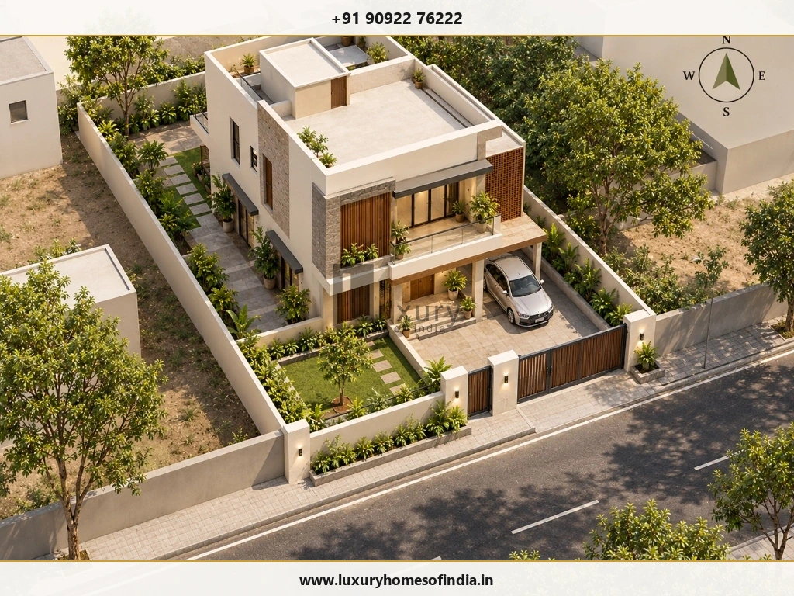
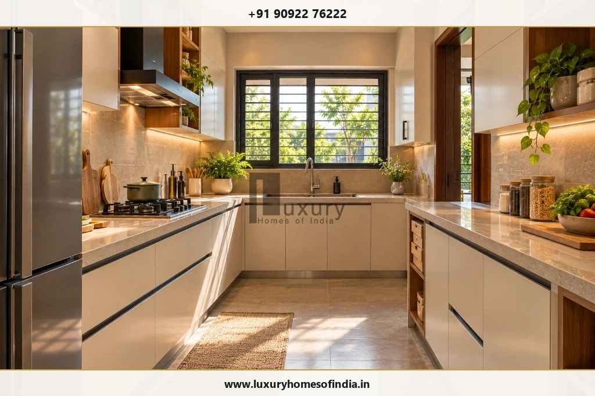
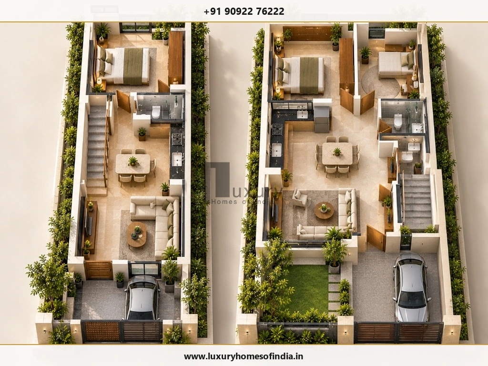
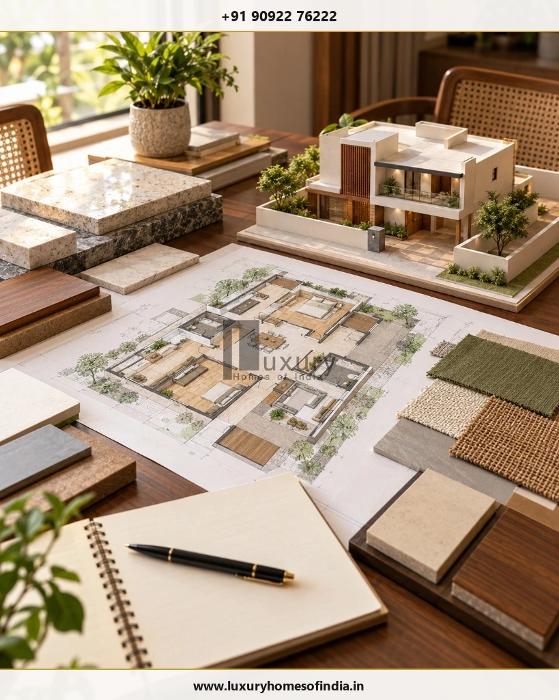

Executive Summary for Chennai Homebuilders
Vastu for house construction in Chennai is best approached as part of the early architectural planning process. Homeowners can discuss traditional preferences for the main entrance, kitchen, master bedroom, pooja room and staircase before the floor plan is finalised. The design must also respond to the actual plot dimensions, road access, sunlight, ventilation, drainage, family requirements and applicable building regulations.
Common Vastu preferences include the south-east for the kitchen, south-west for the master bedroom and north-east for the pooja room, although interpretations differ between traditions. These are preferences rather than universal building rules. A suitable house plan balances the family's beliefs with practical room sizes, comfortable circulation, structural safety and regulatory compliance.
For a Chennai home, begin by confirming the site survey and north direction, identifying the permitted building footprint, and discussing priorities with your architect. This approach helps you evaluate alternatives before architectural, structural and service drawings are finalised.

What Is Vastu Shastra in House Construction?
Vastu Shastra is a traditional Indian system of architectural and spatial planning. It informs how some homeowners prefer to arrange entrances, rooms, open spaces and other features in a building.
When planning a home, Vastu preferences may influence:
- Plot orientation and main entrance placement: Selecting optimal entrance doorway locations along the road-facing wall.
- Kitchen location and cooking arrangements: Aligning fire energy zones with safe ergonomics, ventilation, and morning light.
- Master bedroom and children's bedroom placement: Ensuring privacy, stability, quiet sleep environments, and dedicated study desks.
- Pooja rooms and dedicated prayer spaces: Establishing serene, clean, and easily accessible zones for daily prayer.
- Bathrooms, staircases and circulation: Placing service shafts, vertical circulation, and wet cores without encroaching on primary living spaces.
- Open spaces, daylight and ventilation: Optimising courtyard apertures, window placements, and cross-ventilation in hot, humid Chennai climates.
Architectural Alignment Principle
Interpretations vary among practitioners and traditions. Discuss the method you wish to follow before finalising a floor plan rather than combining recommendations from unrelated diagrams. Vastu is a traditional belief system and does not scientifically guarantee prosperity, health or success. Its preferences can be considered alongside architectural design, provided they do not compromise safety, functionality or applicable regulations.
1. Start with Plot Orientation and Site Assessment
Before preparing a Vastu-based house plan, establish the actual dimensions and conditions of the property. A plot described as east-facing or north-facing should be checked against a reliable site survey, with true north clearly marked.
Review the following site factors systematically:
- Plot dimensions: Confirm the boundary lengths, width and depth to calculate exact square footage.
- Road access: Identify the road-facing boundary, entrance access, driveway turning radiuses, and parking requirements.
- Site levels: Understand existing road-to-plot levels, surrounding terrain, and storm drainage conditions during monsoon seasons.
- Sunlight and shade: Assess neighbouring multi-storey buildings, exposed western walls, and potential solar obstructions.
- Utilities: Identify existing EB power lines, Metro water mains, sewer lines, and practical connection routes.
- Building constraints: Establish applicable municipal setbacks, permissible FSI/FAR, height limits, and coverage rules.
These factors determine how much space is available for the house and how rooms can be arranged. Two plots with the same orientation may require very different designs depending on road width and boundary proportions.

2. Main Entrance Vastu for Different House Orientations
The main entrance is one of the most discussed elements of Vastu-based residential planning. Some traditions divide an entrance wall into directional segments, known as padas, to identify preferred door positions.
The recommended position varies according to the Vastu method being followed. A general directional diagram should not be treated as a substitute for a site-specific architectural plan.
| House Orientation | Common Vastu Approach | Practical Design Check |
|---|---|---|
| East-facing | Consider preferred segments along the east wall (Jayanta and Indra padas are traditionally cited). | Review morning light, entry access, porch design, and front boundary gate coordination. |
| North-facing | Assess preferred segments along the north wall (Mukhya and Bhallat padas are common preferences). | Coordinate the entrance with the foyer, living room, car porch, and visitor circulation. |
| West-facing | Verify the preferred segment for the chosen tradition (Pushpadanta pada is widely cited). | Consider harsh afternoon sun, weather protection, deep verandah shading, and circulation. |
| South-facing | Check the recommended segment before fixing the entrance (Vithatha and Gruhaksht padas). | Coordinate gate location, front shading, compound wall height, and car parking accessibility. |
Planning Tip for Doorways
Confirm the road-facing boundary and the exact entrance location on the same drawing. This makes it easier to evaluate Vastu preferences against parking clearances, privacy from the street, circulation routes, and the usable interior carpet area.
3. Vastu Room Placement for a Chennai Home
The following table summarises commonly cited Vastu preferences across directional quadrants. It is designed as a collaborative discussion guide between homeowner and architect, not a rigid set of mandatory construction constraints.
| Room or Feature | Common Vastu Preference | Practical Design Consideration |
|---|---|---|
| Main entrance | Preferred segment of the road-facing wall | Verify orientation and doorway position on the site plan; ensure clear foyer transition. |
| Living room | North, north-east or east | Preserve natural daylight, cross-ventilation, visitor access, and unobstructed circulation. |
| Pooja room | North-east (Ishanya) | Provide a quiet, accessible, and easily maintainable space away from plumbing walls. |
| Kitchen | South-east (Agneya); north-west as alternative | Plan ventilation, work surfaces, chimney ducting, and water/electrical service connections. |
| Master bedroom | South-west (Nairutya) | Prioritise privacy, heavy wardrobe storage, acoustic insulation, and usable furniture dimensions. |
| Children's bedroom | West or north-west | Provide natural study lighting, ample wardrobe storage, daylight, and safe window grilles. |
| Guest bedroom | North-west (Vayavya) or other suitable zone | Ensure guest privacy, adjacent bathroom access, and flexibility for multi-use work/study. |
| Toilets & bathrooms | West or north-west | Coordinate vertical plumbing stacks, exterior shaft ventilation, and multi-layer waterproofing. |
| Staircase | South, west or south-west | Check structural load-bearing capacity, headroom clearances, natural riser-tread ergonomics, and safety. |
| Open space & garden | North or east where feasible | Respect site constraints, mandated municipal boundary setbacks, and rainwater harvesting recharge pits. |
These preferences differ between traditions. If a preferred location conflicts with room dimensions, essential services or building requirements, discuss an alternative rather than forcing an unsuitable arrangement.
4. Vastu for the Kitchen
The south-east is commonly preferred for a kitchen in traditional Vastu planning, representing the fire element (Agni). The north-west is often considered an alternative when the preferred zone does not suit the site orientation or floor plan.
Beyond traditional orientation, a modern Chennai kitchen must support safe, efficient daily culinary routines. Essential checks include:
- Work triangle ergonomics: Balanced distances between the cooking hob, preparation sink, and refrigerator.
- Appliance clearances and storage: Dedicated high-load circuits for ovens, microwaves, dishwashers, and water purifiers.
- Exhaust ventilation and airflow: High-suction chimney ducting to the exterior wall and cross-breeze windows.
- Service junctions: Short plumbing runs for drainage and hot/cold water supply lines to avoid complex floor conduits.
- Dining proximity: Practical access to the dining hall without cutting across private bedroom corridors.
Some Vastu practitioners prefer a cooking arrangement in which the person faces east while cooking. Whether this works depends on the actual room dimensions, window openings, appliance locations and circulation.

5. Vastu for Bedrooms
The south-west is a common traditional preference for the master bedroom, symbolising grounding and stability. Children's bedrooms are often planned in the west or north-west, while a guest bedroom may be located in the north-west or another suitable zone.
The room's position on the compass is only one component of comfortable residential living. Each bedroom must satisfy fundamental habitability criteria:
- Comfortable dimensions: Minimum 12 ft × 14 ft for master suites to allow walking routes around king beds.
- Wardrobe and storage placement: Placing heavy wardrobes along south or west walls, which also acts as thermal insulation.
- Daylight and cross-ventilation: Generous windows on shaded elevations to capture Chennai's evening coastal breeze.
- En-suite bathroom coordination: Direct, private access without exposing bathroom doors directly opposite the bed.
- Acoustic privacy: Buffering bedrooms from noisy living rooms, street traffic, and vertical stair wells.
In Chennai, west-facing windows and exposed walls can receive intense afternoon sunlight. Shading, high-performance glazing, cavity masonry walls, and louvered screens should be integrated to keep bedroom interiors cool.
6. Vastu for the Pooja Room
The north-east (Ishanya) is commonly preferred for a pooja room, as it is considered the corner of spiritual clarity and gentle morning sunlight. Depending on the available floor area and family traditions, prayer spaces take various forms:
- Dedicated prayer room: A standalone room with marble or teak finishes, brass fittings, and storage for ritual items.
- Integrated prayer niche: A beautifully crafted alcove built into the living area or circulation foyer.
- Modular wall-mounted mandir: Custom-designed joinery positioned in the north-eastern quadrant of a study or family lounge.
Practical considerations include providing quiet separation from busy circulation, gentle ambient lighting, easy-to-clean floor tiles, and adequate ventilation for lamps and incense. If the north-east zone is occupied by an entrance foyer or staircase, ask your architect to evaluate sensible alternatives before the layout is locked.
7. Vastu for Toilets, Bathrooms and Staircases
Many Vastu-based plans designate the west or north-west for bathrooms, and the south, west or south-west for staircases. However, their actual placement must be coordinated with structural columns, plumbing shafts, drainage slopes, and circulation routes.
Bathroom & Plumbing Coordination
Ensure effective exterior wall ventilation, minimum 1:50 floor slopes to multi-drain traps, and correctly specified multi-coat waterproofing. Coordinating wet areas across floors vertically simplifies plumbing shafts and long-term maintenance.
Staircase Structural Planning
Establish staircase geometry during concept design—particularly if upper floors will be expanded later. Safe riser-tread ergonomics (150mm riser, 300mm tread), minimum 2.1m headroom, handrails, and adequate lighting must be resolved professionally.
Structural Integrity Warning
Do not relocate structural columns, load-bearing beams, or sanitary drainage shafts during site execution simply to match a generic Vastu diagram. Any significant on-site alteration requires engineering recalculation and formal architectural review.
8. Vastu Considerations for Different Plot Sizes
Plot dimensions directly dictate the flexibility available for directional room zoning. On tighter urban plots, compromises are natural and necessary to preserve habitability.
Crucial Rule: Plot area is not the same as permitted built-up area. Do not assume that the entire plot can be covered at ground level. Establish the applicable setbacks and coverage rules before selecting a layout or room count.

9. Vastu and Building Approval in Chennai
Vastu preferences do not replace statutory planning permission or a building permit. Municipal authorities review building plans strictly against planning parameters such as setbacks, Floor Space Index (FSI), road width, height, and parking rules.
For properties in Chennai, confirm the applicable approval route before construction begins:
Official Statutory Planning Resources
- Greater Chennai Corporation: GCC Town Planning Department Overview
- Online Building Permissions: GCC Online Building Plan Submission Portal
- Metropolitan Master Plan & Approvals: Chennai Metropolitan Development Authority (CMDA)
The appropriate application route and documentation depend on whether the plot falls under CMDA or GCC jurisdiction and the proposed building height. Ask your registered architect or structural engineer to verify the exact approval process before starting civil works.
10. How to Plan Vastu Before Construction Begins
The most effective time to address Vastu preferences is during concept design, before structural drawings, MEP engineering, and municipal approval sets are finalised.
Step 1: Confirm the Plot Details
Obtain an accurate boundary survey with verified corner dimensions, site levels relative to the road, storm drain depths, and true magnetic north recorded by compass.
Step 2: List Your Family's Requirements
Define the number of bedrooms, bathrooms, car parking bays, kitchen style, pooja room requirements, home office spaces, and potential future vertical expansion.
Step 3: Establish the Comprehensive Budget
Calculate realistic construction budgets including structural shell, finishing materials, municipal approvals, borewell/sump utilities, electrical/plumbing installations, and contingency allowances.
Step 4: Agree on Vastu Priorities
Distinguish between essential family Vastu preferences (such as main door and kitchen) and secondary preferences. Identify acceptable compromises before drawing architectural plans.
Step 5: Prepare Concept Architectural Floor Plans
Have your architect evaluate room positions against actual site proportions, Chennai's climate conditions, daylighting, and statutory setbacks.
Step 6: Coordinate Technical Drawings
Ensure structural column layouts, plumbing stacks, electrical switchboards, and terrace waterproofing membranes are fully integrated before soil excavation.
Step 7: Finalise Approvals & Builder Contracts
Obtain approved building permits from GCC/CMDA and execute a detailed, itemised turnkey construction agreement with defined BOQ specifications and stage milestones.

11. Common Vastu and House-Planning Mistakes to Avoid
- Choosing a plan based only on direction: An east-facing plan is only as good as its room proportions, circulation, and structural design.
- Copying generic online floor plans: Standard internet plans ignore your specific plot setbacks, road width, and Chennai building bylaws.
- Fixing the main door without verifying true orientation: Never guess direction with a smartphone app; use a calibrated magnetic survey compass.
- Sacrificing usable room dimensions: Forcing secondary Vastu rules that result in cramped, unusable bedrooms or awkward corridors creates lifelong inconvenience.
- Ignoring sunlight and ventilation: Failing to shade west walls causes extreme heat buildup, increasing air conditioning electricity bills.
- Finalising the staircase too late: Postponing staircase design causes awkward headroom clearance issues and structural load imbalances.
- Overlooking services coordination: Relocating bathrooms without considering plumbing drop shafts leads to chronic moisture leaks.
- Assuming Vastu replaces building approval: Building without GCC/CMDA sanctions risks stop-work notices and compounding demolition penalties.
- Making structural changes during construction: Modifying walls or shifting columns on site without structural engineering review compromises seismic safety.
Frequently Asked Questions
Plan Your Luxury Home with Architectural Precision
A thoughtfully planned home should reflect your family's lifestyle, cultural preferences, and practical spatial requirements. Discuss your project with Luxury Homes of India's in-house architectural and turnkey construction specialists.
Schedule Design Consultation